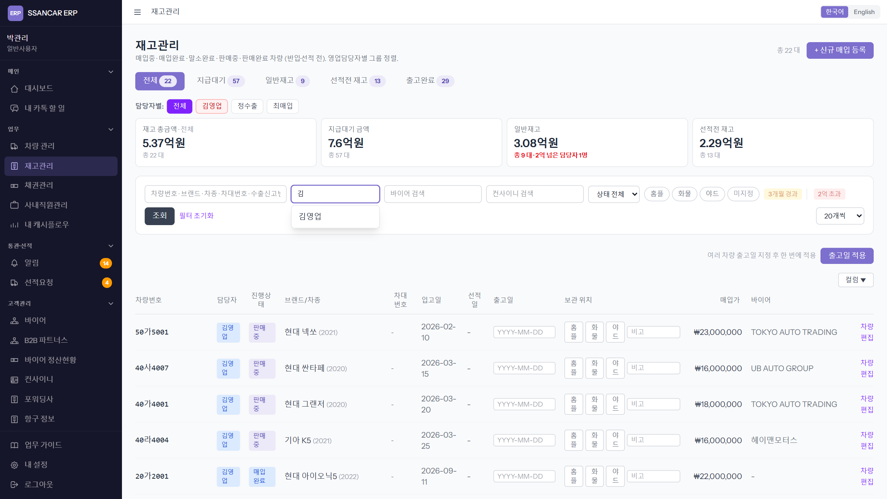
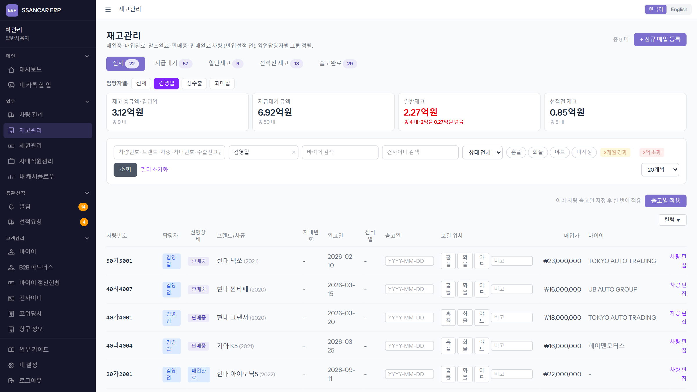
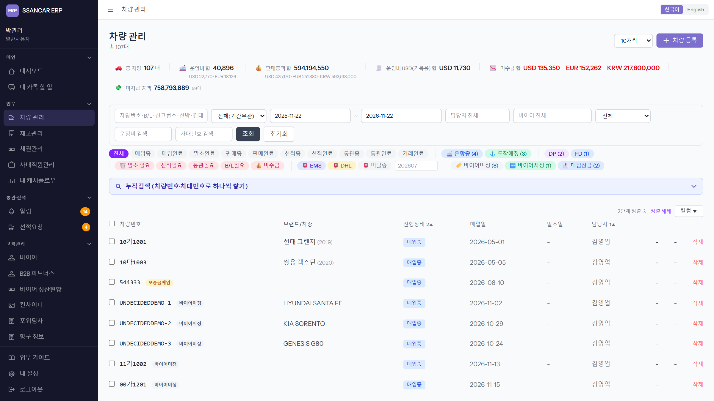
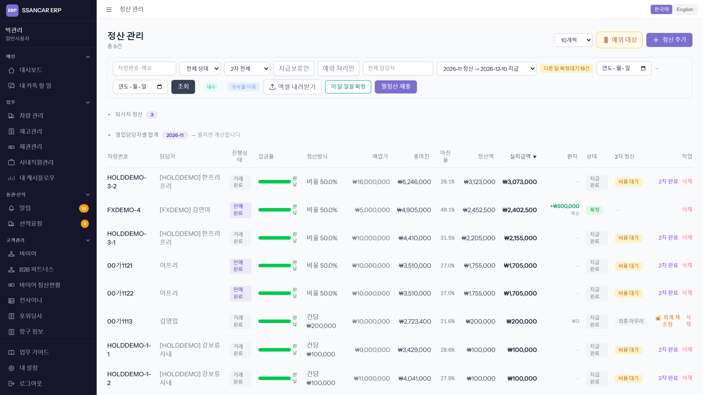
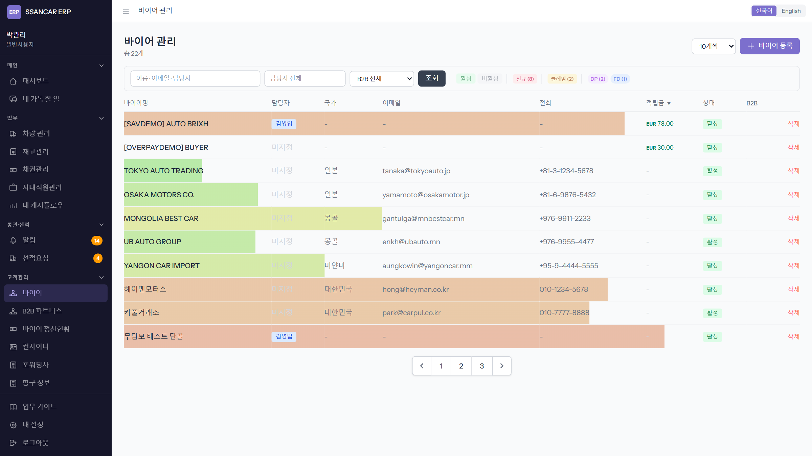

차량 관리 · 재고관리 · 채권관리 · 정산 관리 · 바이어 · 컨사이니 · 사내직원관리 · 재무 처리 같은 목록 화면은 찾는 방법과 줄 세우는 방법이 같습니다. 한 번 익혀 두면 어느 화면에서나 그대로 씁니다.
칸을 누르면 목록이 펼쳐지고, 글자를 치면 그 글자가 든 이름만 남습니다. 이름을 눌러 고릅니다. 칸 오른쪽 ×를 누르면 비워져 「전체」로 돌아갑니다. 바이어 화면의 담당자 칸에는 맨 위에 「담당자 미지정」도 있습니다.

검색어를 치거나 담당자 · 바이어 · 상태 · 날짜를 골라도 목록은 그대로입니다. [조회]를 누르거나 Enter를 쳐야 그 조건으로 다시 찾습니다. 여러 조건을 한꺼번에 고른 뒤 한 번만 누르면 됩니다.

한 번 누르면 ▲(가나다 · 오래된 날짜부터), 다시 누르면 ▼(반대), 또 누르면 그 칸의 정렬이 풀립니다. 정렬 중에 다른 칸을 누르면 뒤에 이어 붙습니다 — 아래 그림은 담당자로 먼저 묶고(1▲) 그 안에서 진행상태 순서(2▲)로 세운 것입니다.

| 칸의 종류 | 처음 누르면 |
|---|---|
| 이름 · 번호 · 날짜 | ▲ — 가나다순, 오래된 날짜부터 |
| 금액(매입가 · 판매가 · 미수금 · 정산액 · 적립금 등) | ▼ — 큰 금액부터. 다시 누르면 작은 금액부터 |
| 진행상태 | ▲ — 매입중 → 매입완료 → 말소완료 → 판매중 → … → 거래완료(일이 흘러가는 순서) |
| 정산 상태 · 2차 정산 | ▲ — 대기 → 계산중 → 확정 → 지급 / 2차 대기 → 마감 |
| 담당자 · 바이어 · 컨사이니 | ▲ — 이름 가나다순 |
입금률 · 총마진 · 마진율 · 정산액 · 실지급액 머리글을 누르면 큰 것부터 섭니다. 이 다섯 칸은 화면을 그릴 때마다 계산하는 값이라 두 가지가 다릅니다.

적립금 머리글을 누르면 같은 통화끼리 묶이고 그 안에서 금액이 큰 바이어부터 섭니다. 유로와 달러를 한 줄로 섞지 않습니다. 적립금이 없는 바이어는 늘 맨 뒤입니다. 두 통화를 가진 바이어는 금액이 큰 통화 쪽에 들어갑니다.
